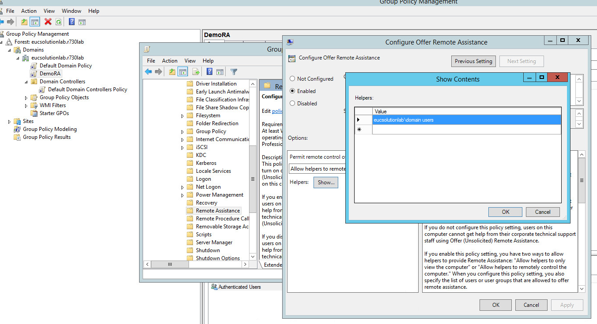

Introduction
Remote Assistance provides the capability for administrator or IT helpdesk to remotely view and/or control end-user's desktop, in Horizon View environment. It's also called session shadowing.
There are two types for remote assistance.- Solicited Remote Assistance: End user sends a request to invite IT help desk to help him/her.
- Admin Initiated Remote Assistance: Administrator or IT helpdesk initiates remote assistance. End user will allow helpassist to connect to the desktop if want to get the help.
Solicited Remote Assistance
How to setup
1. Download Horizon_Remote_Assistance_Installer_v1035.exe
.2. Install component for end-user desktop
Run the installer in end-user desktop, e.g. virtual machine which has View agent, and choose the "Install for end-user" option to install the end-user component.
Normally you can do this on the master template of a View desktop pool.
Make sure the View connection server has Horizon Toolbox installed. By default this page is served by an active Horizon Toolbox.
That's all.
Typical User Scenario
- User creates support request: Desktop end-user clicks "Horizon Remote Assistance" icon on his/her View desktop, to initiate the remote assist request.
- Admin support: Administrator sees requests from the web portal. and by clicking the start button associated with a request to download an Invitation.msrcIncident file. Administrator opens the file by the default associated application, which starts the support.
- User confirmation: A message box is shown in user desktop, and user confirmation is needed to establish the connection.
- Further, full control can be requested by administrator, and still user confirmation is needed.
Admin Initiated Remote Assistance
Typical User Scenario
- Configure remote assistance offer feature: To configure the computer of the end user to accept Remote Assistance offers, administrator or IT helpdesk needs enable this feature by changing domain GPO or local policy settings.
- Configure remote assistance offer firewall: Remote assistance feature should be allowed to pass through the firewall by changing domain GPO or local policy settings.
- Initiate remote assistance: Administrator or IT helpdesk looks up the matched active session and clicks the "Remote Assist" button from the web portal. Toolbox service will initiate the assist request and download an Invitation.msrcIncident file. Administrator or IT helpdesk opens the file by the default associated application, which starts the support.
- User confirmation: A message box is shown in user desktop, and user confirmation is needed to establish the connection.
- Further, full control can be requested by administrator, and still user confirmation is needed.
Notes:
- RDS desktop is not supported for offer-based remote assistance feature. End-user needs issue the remote assistance request on RDS desktop.
-
Refer to the link Remote Assistance configuration to check how to configure a computer to receive remote assistance offers. 
- Normally remote assistance request is timeout in a few minutes to hours, according to your system setting.
- The maximum number of history records is 200 for offer remote assistance.
-
If cannot initiate offer-based remote assistance, please check the environment follow these steps:
- Refresh this webpage and check whether the https session timeout.
- Check the activity of this end-user's desktop session.
- Check whehter there is msra.exe process in the task manager of end-user's desktop. If yes, kill this process.
- Check whehter offer-based remote assistance feature has been enabled in this desktop.
Custom Configuration
If Horizon Toolbox is not listening on default port 18443, you need to configure port for Horizon Remote Assistance in VM. This can be achieved by either of the following two ways:
- Add parameter "-port <number>" to command line (E.g. you can modify the command line in the shortcut on desktop), or
- Add registry value "port", with type REG_SZ, under key "HKEY_LOCAL_MACHINE\SOFTWARE\VMware, Inc.\VMware Toolbox\HorizonRemoteAssistance". Create the key and the value if needed.
Troubleshooting
Client side logs:C:\ProgramData\VMware\Horizon Remote Assistance\requestor_<UserName>.log
For example:
C:\ProgramData\VMware\Horizon Remote Assistance\requestor_nanw.logServer side logs:
<HorizonToolbox_dir>\webapps\toolbox\horizontoolbox.log
C:\Users\Public\logs\UnSocRA\*.log
For example:
C:\Program Files\VMware\HorizonToolbox\webapps\toolbox\horizontoolbox.log
C:\Users\Public\logs\UnsocRA\Unsocilicited_tooladmin6856.log